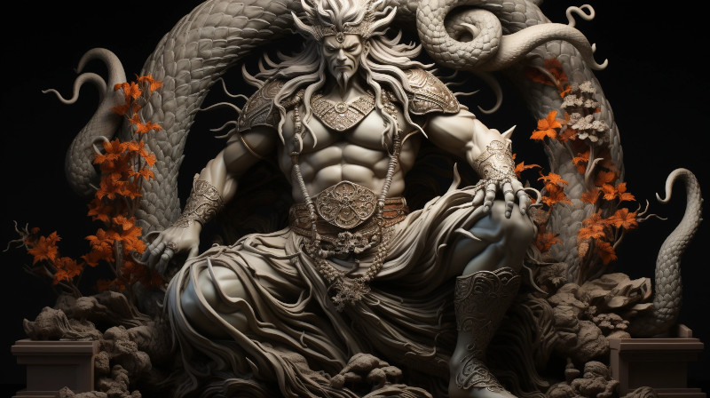

Figure 1: Famous statue of Gurth in the temple in Gathen’dor
The Aenarim is the traditional cult of the Durashim.
Etymology: Derived from a combination of words in an ancient tongue of Naurrnen, ’Aen’ meaning ’eternal’ and ’Arim’ signifying ’guardians’ or ’keepers’.
Origins: The Aenarim could trace their roots back to the earliest days of Anashim history when Gurth was first revered as the Friend of the Dead. They might have been the keepers of traditional funeral rites, historians of the afterlife, and spiritual guides for the living.